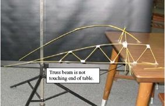

Cantilever Structure Design

ABOUT
An event that tests the capability of cantilevered structure over its longitudinal length and stability made with plastic straws.
DESCRIPTION
A cantilever is a rigid structural element, such as a beam or a plate, anchored at one end to a (usually vertical) support from which it protrudes; this connection could also be perpendicular to a flat, vertical surface such as a wall. Cantilevers can also be constructed with trusses or slabs. When subjected to a structural load, the cantilever carries the load to the support where it is forced against by a moment and shear stress. Cantilever construction allows overhanging structures without external bracing, in contrast to constructions supported at both ends with loads applied between the supports, such as a simply supported beam found in a post and lintel system.
COMPETITION RULES
- Compete as teams with 2 members in each team.
- Time constrained event (30 minutes).
- Only straws to be used..
- Supported at base by sticky tape only.
- Final structure must be stable along its length.
JUDGING CRITERIA
- At the end of the allotted time judge will measure your cantilever distance, the one with longer cantilever will win.
- The structure must be free standing without touching the ground.